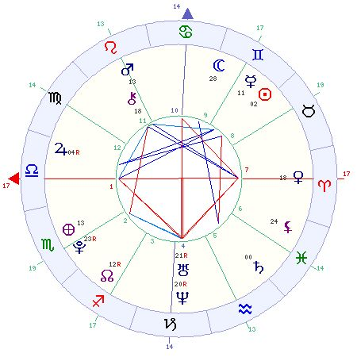

Mandala Astrolágica

- SOL em GÊMEOS
- LUA em GÊMEOS
- MERCURIO em GÊMEOS
- VENUS em ARIES
- MARTE em LEÃO
- JUPTER em LIBRA
- SATURNO em PEIXES
- URANO em CAPRICÓRNIO
- NETUNO em CAPRICÓRNIO
- PLUTÃO em ESCORPIÃO
- Fogo: 2 Terra: 2
- Ar: 8 Água: 4
- Cardeal: 8 Fixo: 2 Mutável: 6
Planetas nos signos
Os planetas nos signos revelam como a energia característica de cada planeta pode agir, mesclada à energia do signo em que se encontra. As combinações são inumeráveis e podem revelar os poderes e possibilidades que cada pessoa tem, suas capacidades ou fraquezas.
SOL EM GÊMEOS
Você se adapta facilmente a qualquer situação. Pode tornar-se superficial e volúvel, por isso deve esforçar-se para ser mais constante no que faz. Você é uma pessoa inteligente e muito ativa. Gosta de estudar, aprender e poder comunicar seus conhecimentos aos outros. Sua mente é ágil e racional; também demonstra bastante curiosidade. É uma pessoa muito sociável, que gosta de viagens e tem talento comercial. É capaz de fazer várias coisas ao mesmo tempo, mas não as leva até o fim.
LUA em GÊMEOS
Tem um temperamento impulsivo, ansioso e é falador. Costuma se preocupar demais com as coisas. Sabe agir com habilidade e diplomacia, embora ceda facilmente ao nervosismo. É oportunista e tem também grande dificuldade em manter a constância nas coisas. Mostra-se indeciso ou dualista nas opiniões. Está sempre se envolvendo em novos compromissos e fazendo várias coisas ao mesmo tempo.
MERCÚRIO em GÊMEOS
Sua mente é muito ágil e alerta. É uma pessoa muito inteligente e com enorme facilidade para aprender. Está sempre estudando alguma coisa nova. Sua capacidade mental inclui um bom poder de síntese e fácil adaptação a novas situações. Gosta muito de ler e tem excelente comunicação com as pessoas. É ágil, irrequieto e muito ativo; gosta de praticar esportes.
VÊNUS em ÁRIES
Você é ardente e apaixonado. É impulsivo e age sem pensar, no que se refere a relacionamentos e amor. Apaixona-se facilmente, mas deixa o amor esfriar muito depressa. Pode resolver se casar precipitadamente; deveria ser mais ponderado nos relacionamentos. É extravagante e generoso e pode viver vários romances.
MARTE em LEÃO
Você é uma pessoa enérgica e muito confiante. Enfrenta o trabalho com valentia, e tem autoridade suficiente para exercer até uma chefia. É corajoso e enfrenta desafios porque sabe até onde é capaz de chegar. Tem tendência a febres e a pressão alta.
JÚPITER em LIBRA
Seu senso de justiça é muito apurado, e ninguém é melhor que você para analisar bem cada lado da questão e decidir com imparcialidade. É uma pessoa alegre e que costuma ser amável com todos. Gosta de viver em ambientes requintados e almeja o sucesso social.
SATURNO em PEIXES
Além de ser melancólico e pessimista, você tende a se isolar das pessoas. Trabalhos em locais isolados caem muito bem para sua personalidade, tais como trabalhos em laboratórios ou hospitais. Pode ter ideias de perseguição ou se acha vítima do mundo; combata esses pensamentos. Seus pés podem ter problemas ósseos ou sensibilidade acentuada.
URANO em CAPRICÓRNIO
Tem um talento científico muito grande. Sabe conciliar suas ideias novas e modernas, com bastante seriedade e aplicação no trabalho. A inquietação de Urano é contida por Capricórnio, e você é capaz de agir com muita paciência. Isso pode ajudá-lo na ascensão profissional. Mas corre o risco de abandonar a carreira e mudar totalmente de profissão. Precisa controlar a tendência a ser frio com as pessoas.
NETUNO em CAPRICÓRNIO
Sabe usar sua intuição e perspicácia nos negócios. Tem êxito profissional porque sabe o momento certo de agir. Por outro lado, é melancólico e retraído. Não costuma usar seu sucesso profissional para se sobressair socialmente. Ao contrário, prefere ficar em casa. Pode ter problemas ósseos de difícil detecção.
PLUTÃO em ESCORPIÃO
Plutão fica neste signo por muitos anos, por isso sua influência marca toda uma geração e não, especialmente, você. Tem uma grande força interior, que pode ser usada de muitas maneiras. Gostaria de reformular radicalmente o mundo, para que ele fosse melhor. Sua força psíquica pode lhe dar também tendências drásticas e destrutivas. Cabe a você saber usar todo seu potencial da forma mais adequada.
CASAS ASTROLÓGICAS
As casas astrológicas significam os diferentes assuntos ou temas que norteiam nossa vida diária. Têm seus significados dinamizados pelas energias dos planetas que aparecem em cada uma delas.
ASCENDENTE OU CASA 1 EM LIBRA
A primeira casa fala sobre sua personalidade, seu exterior, sua forma de aparecer aos olhos dos outros. Você detesta desarmonias, por isso é um apaziguador nato e tem excelente senso diplomático para lidar com pessoas. Assim, é muito agradável e sociável no convívio com todos. É tido como uma pessoa simpática e muito dócil. Assim como uma balança, você procura sempre o equilíbrio, por isso evita atitudes radicais em qualquer situação. Tem forte senso de justiça e costuma analisar bastante os dois lados de qualquer questão antes de se decidir. É bastante inteligente e tem muita imaginação, o que favorece seu talento artístico, seja como praticante, seja como admirador das artes.
CASA 2 EM ESCORPIÃO
A segunda casa fala sobre suas finanças. Ela se refere ao dinheiro ou bens que você ganha pelo seu trabalho, ou sobre o desejo de ganhar esse dinheiro. Seu dinheiro pode ser proveniente, em parte, de alguma herança. Pode se tornar responsável pelas finanças de alguém. Um trabalho ligado a pesquisas ou assuntos ocultistas pode lhe dar lucros.
PLUTÃO na CASA 2
Você sabe dar grandes reviravoltas quando está em situação de crise financeira. Sabe como conseguir ajeitar a situação e resolve o problema. Pode ganhar dinheiro com assuntos ligados à Computação. O trabalho com assuntos ligados à Psicologia ou a indústrias orientais pode ser compensador. Mas, também pode ser pego de surpresa por dificuldades financeiras.
CASA 3 EM SAGITÁRIO
A terceira casa tem vários significados. Ela mostra sua inteligência, seus estudos, suas comunicações em geral. Também significa as viagens curtas, os colegas, irmãos e vizinhos. Você é um viajante por excelência e adora fazer pequenas viagens repentinas. Tem um grande espírito aventureiro, e viajar é um modo de renovar suas ideias. É inteligente e tem interesse por assuntos filosóficos ou religiosos.
CASA 4 EM CAPRICÓRNIO
A quarta casa significa seu lar, sua herança psicológica, seus pais, seu patrimônio e sua época final de vida. Provavelmente você leve uma vida retirada na sua velhice. Talvez suas principais ambições na vida se realizem só tardiamente. Há chances de você se tornar proprietário de terras ou imóveis. Seus pais lhe ensinaram um modo de vida austero e a ter um caráter honrado.
URNAO na CASA 4
Sua casa sempre foi um pouco original e diferente das outras. Lá, cada pessoa tinha liberdade de fazer o que quisesse. Seus pais são pessoas amigas e liberais e sempre lhe deram independência. Pode ter mudado de residência várias vezes, geralmente de forma repentina. Gosta de ter em casa um ambiente moderno e arrojado.ter mudado de residência várias vezes, geralmente de forma repentina. Gosta de ter em casa um ambiente moderno e arrojado.
NETUNO na CASA 4
Seu lar de infância era um ambiente místico ou muito religioso. Você foi criado com crença religiosa e piedade. Gosta de ambientes delicados, artísticos e com um toque oriental para a decoração em sua casa. Ouvir música suave em casa lhe fará bem. Tem interesse pelas Artes em geral e pela Psicologia.
AQUÁRIO na CASA 5
A quinta casa mostra suas relações sentimentais, suas habilidades artísticas, seus prazeres, o jogo e os filhos. Para você os romances têm sempre um toque de amizade. Seus relacionamentos acabam sempre passando por situações repentinas que levam a separações periódicas. Pode se dedicar ao ensino de matérias científicas ou assuntos novos e originais.
SATURNO na CASA 5
Você é uma pessoa um pouco séria, até em suas diversões. Não gosta de agitação ou festas barulhentas. No jogo, também não tem muita sorte, por isso não perca tempo com essas ilusões. Seus ganhos não são por jogos ou investimentos de risco, mas sim por uma administração consciente de seus proventos. No amor, é sério, prudente e não se envolve em relações arriscadas. Tem as emoções sob controle e não se deixa levar por arroubos afetivos.
CASA 6 em PEIXES
A sexta casa lhe traz as tendências de saúde, o relacionamento com colegas de trabalho ou seus empregados, e as condições de seu emprego. No trabalho você pode se sair melhor como empregado. Sua personalidade não se encaixa tão bem em cargos de chefia. Pode se dar bem trabalhando em hospitais ou hotéis. Tem saúde frágil, com propensão a intoxicações, problemas respiratórios ou excessiva sensibilidade nos pés.
CASA 7 em ÁRIES
A sétima casa fala de seu casamento, das associações comerciais, do seu cônjuge e dos inimigos declarados. Você pode ser do tipo que se casa cedo e de forma impulsiva. Pode haver muitas discussões em casa, mesmo havendo bom relacionamento entre ambos. Tem tendência a se associar comercialmente para algum negócio de tipo inédito no mercado. Se tiver inimigos às claras, tome cuidado, pois serão do tipo briguento.
VÊNUS na CASA 7
Seu casamento será harmonioso e afetivo. Seu cônjuge é amável e de boa situação social. Você não é pessoa de ter inimigos, e convive bem com todos. Pode fazer uma sociedade comercial agradável e lucrativa. Socialmente, você é uma pessoa benquista e que sempre é convidada para festas e reuniões.
CASA 8 em TOURO
A oitava casa traz as heranças a receber, o dinheiro do cônjuge, a sexualidade e a capacidade de renovação que você tenha. Você pode vir a receber heranças, que vão lhe dar uma boa ajuda. A situação financeira do seu cônjuge é boa e estável. Tem muita sensualidade e bastante atração pelos prazeres sexuais.
SOL na CASA 8
Sua vitalidade física é um pouco fraca; por outro lado, sua mediunidade é acentuada. Gosta de estudar assuntos esotéricos. Você tem chances de receber alguma herança durante sua vida. Pode ter um cônjuge com boa situação financeira, ou um cônjuge esbanjador.
MERCÚRIO na CASA 8
Você tem interesse em estudar coisas ocultas e mistérios. O esoterismo o atrai muito, além de gostar de livros policiais, de mistério e de terror. Gosta de ficar num lugar sossegado, lendo um bom livro. Pode receber uma pequena herança, ou seu cônjuge pode ganhar dinheiro com o comércio.
CASA 9 em GÊMEOS
A nona casa é das viagens longas ou ao exterior, as aspirações espirituais, e os seus interesses quanto aos estudos superiores. Você é muito inteligente, e tanto sabe ter ideias profundas, como ter uma mente prática para as coisas do dia-a-dia. Seus ideais são bastante elevados, mas você tende a mudá-los com frequência. Adora viagens e, se nada o prender num lugar, é capaz de passar a maior parte da vida viajando.
LUA na CASA 9
Tem muitos ideais na vida, sonhando com um mundo melhor. Mas não tem muita firmeza nisso e muda de sonhos com frequência. Adora viajar, e é provável que faça viagens ao exterior muito aprazíveis. Talvez possa até vir a residir no estrangeiro. Tem gosto por estudos superiores e filosofia. Tem grande facilidade com línguas estrangeiras e com estudos em geral. Está sempre inventando um novo curso; acha que a cultura é fundamental para as pessoas.
MEIO DO CÉU ou CASA 10 em CÂNCER
A décima casa significa a sua carreira, as suas possibilidades de êxito social, o caminho que você mesmo escolhe para sua vida. No trabalho você pode demonstrar certa timidez, que poderá ser vista como arrogância. Mesmo assim, é uma pessoa que se torna popular e se dá bem trabalhando diretamente com o público. O trabalho em casa também lhe parece adequado. Está sujeito a altos e baixos na carreira, alcançando uma boa posição já na maturidade. Pode ter sucesso trabalhando com assuntos ligados ao passado, à memória, como História, Arqueologia, trabalhos em museus ou bibliotecas. A hotelaria e a cozinha também fazem parte de seus interesses.
MARTE nas CASAS 10/11
Como MARTE está matematicamente na Casa 10, mas já dentro da orbe de efeito da Casa 11 (em conjunção com sua cúspide), será interpretado com ênfase na Casa 11, no item correspondente.
CASA 11 em LEÃO
A décima-primeira casa mostra suas amizades e que atitudes você tem frente a esses amigos. Mostra também seus sonhos, seus projetos e esperanças. Seus amigos são um pouco mandões, mas muito fiéis a você. São eles que lhe dão ânimo e entusiasmo. Pode ter amigos importantes, que podem ajudá-lo através de sua influência.
MARTE na CASA 11
Seus projetos são entusiasmados, e você se dedica de corpo e alma a eles, mas é impaciente. Seus amigos são ativos, dinâmicos e sempre inventam programas agitados. Dificilmente você fica em casa; os amigos o levam para a agitação social. Pode ter mais amigos do que amigas, mas pode haver tendência a brigas com eles. Pode ter algum amigo que passe por dificuldades e o preocupe muito.
CASA 12 em VIRGEM
A décima-segunda casa significa os problemas e preocupações maiores de sua vida. Mostra os inimigos secretos e as traições, mas também sua evolução interior. Um de seus problemas é sua excessiva meticulosidade com as coisas, isso pode te incomodar bastante. A saúde fraca também o perturba. No convívio com as pessoas, não exija delas a perfeição. Todos cometem erros.
JÚPITER na CASA 12
Você é uma pessoa muito caridosa e piedosa. Sempre ajuda o próximo, mas de uma forma anônima. Tem certa vocação religiosa e gosta do ambiente calmo de um mosteiro. Pode ter estudado em colégios religiosos. O isolamento pode lhe fazer bem ocasionalmente.
ASPECTOS PLANETÁRIOS
Os aspectos entre planetas mostram como as diferentes energias planetárias se relacionam entre si conforme cada mapa. Neste sentido, temos a informação de quais planetas dominam, quais interagem positivamente e quais causam tensão no seu contato com os outros. Essa mescla mostra as características pessoais e as possibilidades de sucessos ou dificuldades na vida.
SOL em trígono com JÚPITER
Você tem sorte; acaba sempre sendo ajudado por alguém quando precisa. É otimista e vê tudo pelo lado bom. Tem bom-humor e jovialidade. Gosta do conforto, bem-estar e da boa alimentação. Tem tendência a engordar. Tem recuperação rápida de moléstias e boa vitalidade. Sua "boa estrela " o ajuda financeiramente; mesmo que não seja rico, sempre tem o dinheiro suficiente quando precisa.
SOL em quadratura com SATURNO
Demonstra um pouco de frieza e é desconfiado das intenções dos outros. Aprecia a solidão e não é de se relacionar muito com as pessoas. Tem uma vida rotineira e não gosta de mudanças. Não tem muita vitalidade física; além disso, é propenso a problemas de coluna, problemas ósseos em geral, com dentes, pele ou cabelo. As doenças típicas do frio o afetam bastante.
LUA em trígono com SATURNO
Sua seriedade inspira confiança, principalmente nos mais velhos, que veem em você uma pessoa estável. Você é prudente e fiel; também é bastante econômico. Tem emoções intensas e profundas, embora não o demonstre. É caseiro e aprecia estar sempre em seu ambiente familiar. Tem muita resistência física e é capaz de aguentar qualquer dificuldade de saúde.
MERCÚRIO em sextil com MARTE
Sua mente é ágil e alerta. Tem raciocínio rápido e destreza manual. Decide rapidamente e tem grande habilidade de colocar em prática suas ideias. Não sabe ficar parado; está sempre em movimento. Pratique esportes, que lhe farão bem. Gosta de correr no trânsito e de fazer muitas viagens. Tem o sistema nervoso excelente.
MERCÚRIO em trígono com JÚPITER
Tem ideias otimistas e é muito honesto. Você fala o que tiver que falar, com franqueza absoluta. É bondoso e justo com todas as pessoas. Gosta de estudar línguas e tem atração pelo Direito. Tem chances de fazer viagens ao exterior que serão muito boas. Tem talento comercial e pode se dar bem trabalhando com exportação e importação.
MERCÚRIO em trígono com o ASCENDENTE
Você é inteligente e alerta. Sua mente é rápida e ágil, e isso o ajuda bastante. Tem um sistema nervoso bem funcional e, com isso, sabe ser esperto e ativo, sem ter tendências ao exagero. Aprecia as viagens constantes; não consegue ficar num só lugar por muito tempo. Tem bom relacionamento com irmãos, tem talento comercial e gosta de estudos e leituras.
VÊNUS em trígono com MARTE
Você é generoso e exaltado no amor. Tem um temperamento ardente e é namorador. Pode ter vários romances na sua vida. Tem facilidade em ganhar dinheiro, mas gasta muito também. Seu humor é alegre e jovial.
VÊNUS em quadratura com URANO
Você tem uma vida sentimental instável. Da mesma forma que começa romances rapidamente, eles podem acabar bruscamente. Pode se relacionar com pessoas casadas ou divorciadas. Gosta de arte, mas do tipo moderno e vanguardista. Financeiramente, é sujeito a surpresas e despesas inesperadas, por isso é conveniente ter uma poupança para emergências.
VÊNUS em quadratura com NETUNO
Sua vida afetiva é complicada. Você tende a se iludir a respeito das qualidades do parceiro. Não enxerga a realidade e pode acabar sofrendo desilusões. Não resiste aos poderes da sedução e pode exagerar na sensualidade. Quando sente que um relacionamento vai terminar, tem enormes dificuldades em chegar ao ponto final. Fisicamente, sua digestão pode sofrer com alimentos muito temperados ou bebidas fortes.
VÊNUS em oposição ao ASCENDENTE
Você leva uma vida social muito agitada e esse exagero acaba lhe sendo prejudicial. Também é um pouco preguiçoso e precisa combater a indolência. Costuma gastar muito dinheiro e acaba descontrolando suas finanças. Pode não ter muita sorte na vida afetiva.
VÊNUS em quadratura com o MEIO DO CÉU
Você nem sempre age de modo simpático no trabalho. Também não tem muitas oportunidades novas. Precisa tentar ser mais agradável com todos. Não tem muito jeito para lidar com seu dinheiro, o que lhe traz prejuízos. Pode sofrer a influência negativa de mulheres no seu trabalho. Não tem sorte em trabalhos artísticos ou ligados a assuntos femininos.
URANO em conjunção com NETUNO
Sua mediunidade é acentuada, assim como sua intuição. No entanto, você se vê perdido com elas. Não sabe como tirar bom proveito disso; pelo contrário, acaba se enredando em impressões e pressentimentos errados. Você acaba perdendo a visão da realidade das coisas. Tem tendência a ser muito nervoso e impressionável. Procure ser mais realista e prático.
URANO em sextil com PLUTÃO
Você é intuitivo e ágil nas suas ações. Tem muito senso estratégico e sabe escolher o momento certo para agir. Toma atitudes rápidas e drásticas. Não é o tipo de pessoa que demora a tomar decisões. Você tem bastante interesse pela Eletrônica e Computação. Vale a pena investir nesse talento. Também pode se interessar pela Psicologia.
URANO em quadratura com o ASCENDENTE
Você é uma pessoa nervosa e excitável. Assim, costuma ser propenso a estafas frequentes. É impaciente, não sabendo esperar o momento certo para agir. Deve aprender a combater a precipitação e cultivar a calma. É propenso a acidentes domésticos, porque é imprudente e estabanado. Tem muita intuição, mas não sabe fazer bom uso dela. Pode ter propensão a problemas circulatórios ou nervosos.
URANO em oposição ao MEIO DO CÉU
Você é impaciente no trabalho. Não tem paciência para construir sua carreira aos poucos. Gostaria de alcançar o sucesso imediatamente. É sujeito a problemas repentinos e inesperados no trabalho. Além disso, tem muita tendência a mudar de profissão várias vezes. Precisa aprender a ter mais estabilidade profissional. É criativo, mas não sabe tirar proveito disso profissionalmente.
NETUNO em sextil com PLUTÃO
Ele dá sensibilidade e intuição positivas à nossa geração. O interesse pela ecologia, pela vida mais natural, pela alimentação saudável é resultado deste aspecto.
NETUNO em quadratura com o ASCENDENTE
Você tem muita mediunidade, mas não sabe lidar com ela. Assim, é uma pessoa influenciável e que capta as emanações negativas do ambiente. Precisa aprender a se defender dessas influências negativas. Tem tendência a se iludir facilmente, por isso precisa tentar ser muito objetivo e realista. Seu organismo não é muito forte. Assim, você é propenso a doenças contagiosas ou intoxicações.
NETUNO em oposição ao MEIO DO CÉU
Você pode comprometer sua carreira, se deixar suas impressões e pressentimentos errados interferirem. Pode sofrer traições de falsos " amigos " no trabalho; por isso, precisa conhecer bem as pessoas com quem convive. Cuidado com confusões ou ilusões quanto à sua carreira.